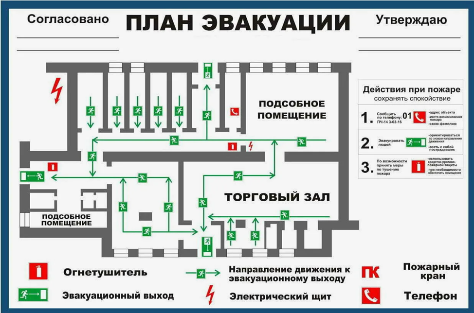
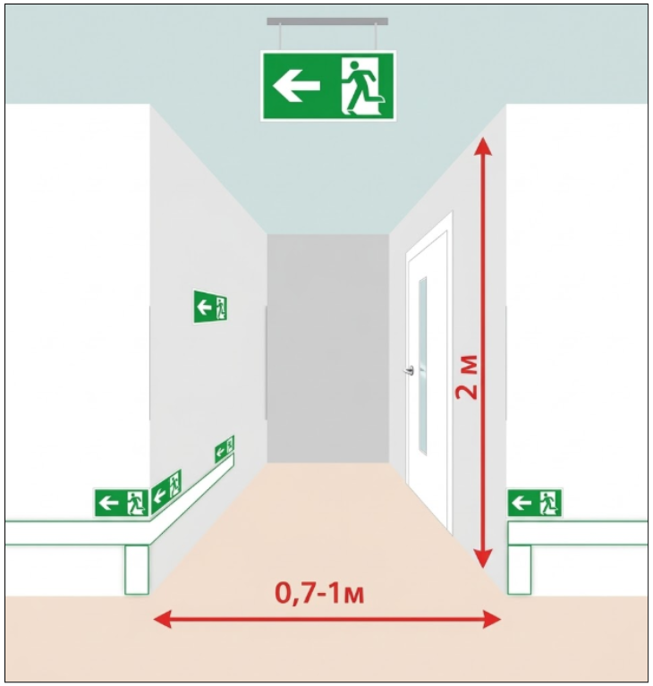
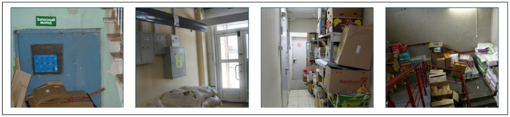
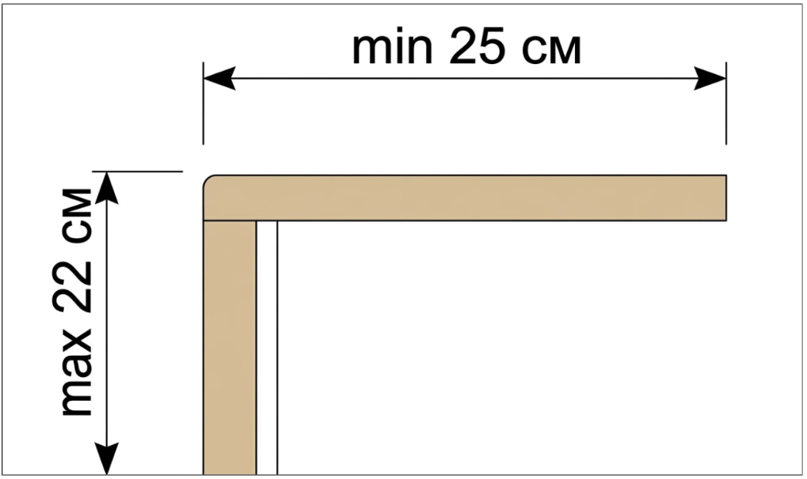

Эвакуация: пути, планы и практическая отработка
На этом уроке мы разберем технические требования к путям спасения, правила оформления планов и способы проверки готовности персонала к ЧП. Вы научитесь отличать «просто дверь» от эвакуационного выхода и узнаете, почему ширина коридора важнее его красоты.

Эвакуация — это рассчитанный до сантиметра процесс вывода людей в безопасную зону. Для ИТР план эвакуации и состояние коридоров — это зона персональной ответственности. Если выход заблокирован или план оформлен неверно, при проверке или ЧП отвечать будет должностное лицо.
Какие требования к планам эвакуации
Практическая отработка планов эвакуации — важная часть подготовки персонала. В зданиях с массовым пребыванием людей планы эвакуации вывешиваются на видных местах. Документ делится на две части: графическую и текстовую.
Графическая часть (Схема)Это этажная или секционная планировка здания, на которой в обязательном порядке указываются: | Текстовая часть (Инструкция)В этом блоке фиксируется четкий порядок действий при ЧП: |
|
|
Посмотрите, как выглядит типовой план эвакуации:

Практическая часть
Теперь попробуйте определить, какие элементы плана эвакуации относятся к графической части, а какие — к текстовой.
Какие требования к путям эвакуации и эвакуационным выходам
Требования к эвакуационным выходам
Эвакуационный выход – это выход, ведущий в безопасную при пожаре зону. С первого этажа это выход напрямую на улицу либо через коридор и вестибюль. С вышележащих этажей путь должен вести на лестничную клетку или в холл с доступом к лестнице. Допускается выход в соседнее помещение на том же этаже, если из него есть прямой путь на улицу или лестницу.
Нельзя выводить людей через склады или помещения с опасными процессами.
Выход не является эвакуационным, если в нем установлены:
- раздвижные, подъемные или вращающиеся двери и ворота.
- вращающиеся двери и турникеты.
- лифты и эскалаторы.
Любое помещение должно иметь не менее двух эвакуационных выходов. Для подвалов и цоколей площадью более 300 м² или при нахождении в них более 15 человек наличие двух выходов обязательно.
Требования к путям эвакуации
Пути эвакуации — это безопасные маршруты, которые должны обеспечивать беспрепятственный выход людей. Для этого на всем пути предусматривают аварийное освещение. В коридорах запрещено устанавливать оборудование, выступающее из стен ниже 2 метров, проводить газопроводы или хранить материалы.
Основные параметры проходов:
- высота прохода — не менее 2 метров.
- ширина прохода — минимум 1 метр (0,7 метра — только для прохода к одному рабочему месту).

- пропускная способность — ширина должна позволять беспрепятственно пронести носилки с человеком.
- разделение — если длина коридора превышает 60 метров, его необходимо разделять противопожарными перегородками.
На путях эвакуации нельзя использовать лифты и эскалаторы. Также не допускается хранение чего-либо в проходах:

Требования к лестницам:
На путях эвакуации запрещены винтовые конструкции и ступени разного размера. По нормам ширина ступени должна быть не менее 25 см, а высота — не более 22 см:

Практическая часть
При пожаре или задымлении время — ваш главный враг. В реальной ситуации у вас не будет возможности искать инструкции или советоваться с коллегами. Решения должны приниматься на автомате.
Я создал этот квиз, чтобы проверить вашу готовность действовать в условиях дефицита времени. У вас есть всего 10 секунд на каждый ответ. Помните: в экстренной ситуации именно эти 10 секунд могут стоить человеку жизни.
Мы знаем, как тушить пожар и как от него спасаться. Но лучший пожар — тот, который не начался. По статистике, именно огневые работы являются главным «поставщиком» ЧП на строительных площадках. Одна искра или вовремя не замеченное тление могут уничтожить результаты месяцев работы за считанные минуты.
В заключительном уроке курса перейдем к организации огневых работ. Мы разберем не только технические требования, но и юридическую сторону вопроса — от оформления наряда-допуска до контроля места работ после их завершения.
{kind=link}
{kind=link}
{kind=link}